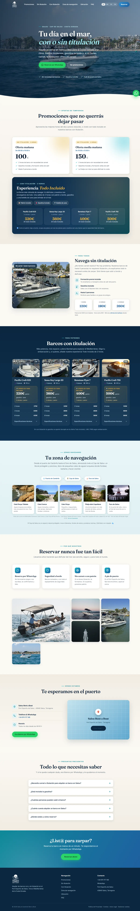

Javier Callejo
Ingeniero de Telecomunicaciones con máster en Dirección Comercial y Ventas. Del problema del cliente al software funcionando.
Descargar CV«Igual de cómodo delante del código que delante del cliente.»
CC Studio
Entra en nuestro ecosistema: webs y software que mueven negocios.
Producto & código
Reservas, herramientas internas y webs, con desarrollo asistido por IA.
Comercial & estrategia
Ventas B2B, negociación y visión de negocio con impacto medible.

Plataforma de reservas
Rent a Boat Salou · +20% de facturación anual
Perfil híbrido técnico–comercial: igual de cómodo delante del código que delante del cliente. En Rent a Boat Salou diseñó y lanzó la plataforma completa de reservas de la flota, las herramientas internas de operación y la web corporativa, con desarrollo asistido por IA — con un impacto del +20% en facturación anual. Antes, ciberseguridad en Deloitte (ISO 27001) y robótica autónoma (ROS2) en la Universidad de Alcalá.
-
Operations & Sales Manager · AI Product BuilderRent a Boat Salou — Saloujun 2022 — actualidad
- Sistema completo de reservas y gestión de flota, sustituyendo un proceso manual en papel.
- Herramientas operativas offline-first: fichajes del equipo y check-in a pie de barco.
- Diseño, construcción y lanzamiento de la web corporativa de principio a fin.
- +20% de facturación anual optimizando canales y creando nuevas líneas de ingreso.
-
Research Assistant · Grupo de RobóticaUniversidad de Alcalá — Madridnov 2022 — jun 2023
- Proyectos de navegación autónoma con ROS2; puente entre lo técnico y lo entendible.
-
Cyber Security AnalystHipoges Iberia — Madridoct 2021 — feb 2022
- Implantación de ISO 27001, políticas de seguridad y análisis de vulnerabilidades.
-
Cyber Security AnalystDeloitte España — Madridene 2021 — oct 2021
- Analista SOC: análisis estático y dinámico de aplicaciones web (SAST/DAST).
-
Gestor de reservas de flota repo privado
- Calendario, disponibilidad, cobros y contabilidad de dos flotas; app de un solo archivo offline-first y versión de escritorio con Electron + SQLite.
-
Web multiidioma de Rent a Boat
- ES/EN/FR/CA generados con Python, SEO/GEO con datos estructurados y analítica propia sin cookies (PHP + SQLite).
-
CC Studio — webs y software con IA
- Cofundador del estudio: webs para clientes de principio a fin con desarrollo asistido por IA.
-
Watch My Bag — monitor de relojes de lujo
- Scraping y monitoreo en Chrono24, Vestiaire y Catawiki: detecta ventas comparando inventarios diarios, con dashboard interactivo.